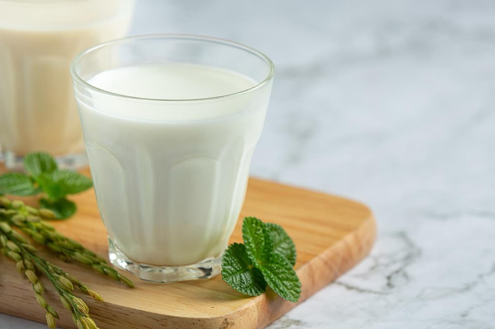
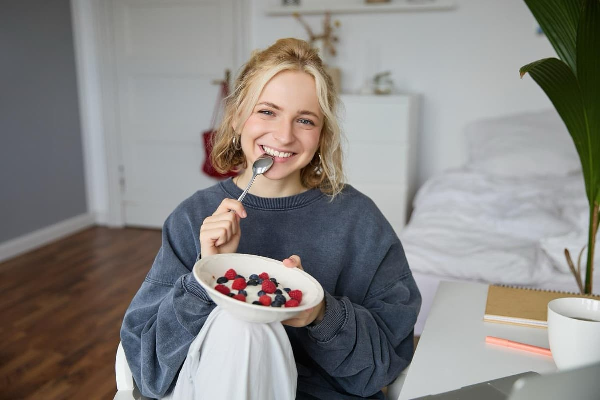
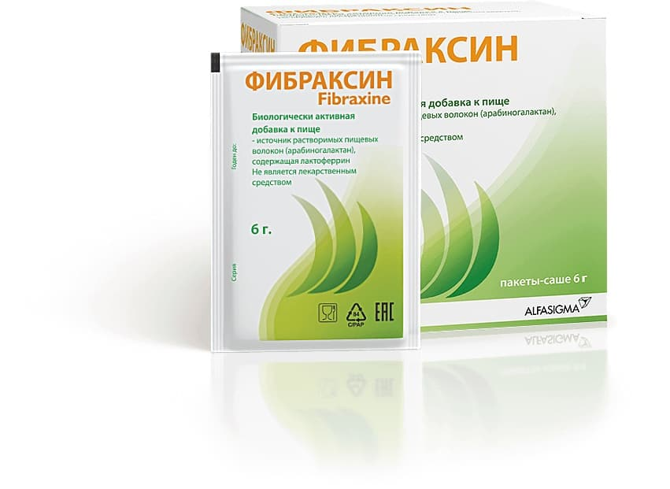

Если вы интересуетесь здоровым образом жизни, наверняка слышали совет добавить в рацион больше клетчатки. Это не очередной модный тренд, а действительно рабочий способ поддерживать здоровье пищеварения и стройность.
В статье разобрались, зачем организму клетчатка и как она влияет на контроль веса. Объяснили, какие продукты стоит добавить в рацион, чтобы получать суточную норму, и чему способствует БАД Фибраксин.
Пищевые волокна и клетчатка — это одно и то же?
В повседневной речи «клетчатка» и «пищевые волокна» используются как синонимы, но это не совсем верно. С научной точки зрения клетчатка — это целлюлоза, то есть один конкретный вид пищевых волокон. И называть ею всю группу веществ — то же самое, что называть все напитки водой [1].
Пищевые волокна — это несколько видов сложных углеводов, которые практически в неизменном виде проходят через весь ЖКТ [1]. Обычно их делят на две группы:
- Нерастворимые. Работают как метла и ускоряют движение пищи по кишечнику. Это помогает нормализовать стул и снизить риск запоров [2].
- Растворимые. Делятся ещё на два типа. Одни притягивают воду и превращаются в гель, образуя своеобразный пищевой комок, который увеличивает объём кишечного содержимого и способствует регуляции стула. Другие растворяются полностью и, попадая в толстый кишечник, становятся пищей для полезных бактерий — это истинные пребиотики. Они питают нормальную микрофлору и способствуют выработке очень важных веществ — короткоцепочечных жирных кислот (КЦЖК), обуславливающих многие процессы в организме [2, 3].
Каждый из видов выполняет свои функции, поэтому важно, чтобы в рационе присутствовали оба. Но если говорить о поддержании веса и регуляции пищевого поведения, бо́льшую роль играют полностью растворимые волокна.
В чём польза клетчатки для тех, кто худеет?
Полностью растворимые пищевые волокна работают как пребиотик и служат едой для полезных микроорганизмов в кишечнике [4]. В процессе питания бактерий образуются короткоцепочечные жирные кислоты (КЦЖК). Эти соединения участвуют в обмене веществ и важны для поддержания стройности [4]. В частности, они:
- участвуют в регуляции жирового обмена. Организм начинает активнее расходовать запасы для получения энергии [5];
- стимулируют выработку гормонов, которые отвечают за чувство насыщения. Благодаря этому между приёмами пищи не возникает мучительного чувства голода [5];
- повышают чувствительность клеток к инсулину. Это помогает избежать нарушений жирового обмена и высокого уровня сахара в крови [5].
Если клетчатки в рационе недостаточно, со временем уменьшается разнообразие бактерий в кишечнике. Вместе с ним снижается количество КЦЖК, и может становиться сложнее контролировать вес.

Что добавить в рацион?
Пищевые волокна содержатся только в растительной пище, поэтому в ежедневный рацион стоит включить:
- Бобовые. Особенно богаты клетчаткой горох и чечевица [7].
- Фрукты и ягоды. Больше всего пищевых волокон в грушах, малине и ежевике [7].
- Овощи. Отдайте предпочтение отварной тыкве, брокколи и батату [7].
- Злаки, цельнозерновую муку и хлеб. Это могут быть хлопья из пшеницы, отруби, булгур [7].
- Орехи и семена. Например, тыквенные семечки, семена чиа и миндаль. Это калорийные продукты, поэтому с ними нужно быть аккуратными. Можно съесть горсть вместо перекуса или добавить в салат [7].
Если резко начать есть много пищевых волокон, может возникнуть вздутие и дискомфорт в кишечнике. Поэтому вводите пищевые волокна постепенно. Сначала добавьте их в один приём пищи, например, горсть малины в йогурт утром или стакан фасоли в обед. Посмотрите, как отреагирует организм. Если всё в порядке, добавляйте одну порцию в день в течение недели [7].

Как набрать норму клетчатки?
Рекомендуемая суточная норма клетчатки — 25 г для женщин и 38 г для мужчин или 14 г на 1000 потребляемых ккал [8]. Но сложно понять, сколько клетчатки вы действительно употребляете. Можно взвешивать продукты, но это быстро надоедает. Кроме того, такой метод не подойдёт для блюд, в которых много ингредиентов.
Есть несколько правил, которые помогут постепенно перейти на питание с высоким содержанием клетчатки:
- Замените белый хлеб и муку на цельнозерновые. Они содержат больше клетчатки и меньше крахмала и сахара, чем обычные, поэтому лучше поддерживают здоровье бактерий в кишечнике [3].
- Включайте фрукты и овощи в каждый приём пищи. В день должно получаться не меньше трёх порций. Как правило, это или три фрукта, или полтора стакана сырых овощей, или три стакана листовой зелени [7].
- Ешьте бобовые не меньше трёх раз в неделю. Их можно использовать как растительный белок в блюдах без мяса или как гарнир вместо круп. Если любите пасту, её тоже можно заменить на чечевичную или нутовую [7].

Даже разнообразный рацион не всегда обеспечивает нужное количество пищевых волокон. Определить это на глаз сложно, но, если заметили нерегулярный стул или ощущение тяжести в животе, возможно, не хватает пищевых волокон. В качестве дополнения к питанию может применяться биологически активная добавка.
Один из вариантов полностью растворимых пищевых волокон — Фибраксин. В состав БАД входят два компонента:
- Арабиногалактан — растворимые пищевые волокна, которые добывают из лиственницы. Вещество поддерживает микрофлору кишечника и число полезных бактерий, которые вырабатывают КЦЖК для нормального обмена веществ. Также арабиногалактан способствует нормализации работы кишечника. В случае затруднения дефекации — учащает стул и смягчает его; при частом опорожнении и жидком стуле приводит к возвращению естественного ритма дефекации и плотности стула [9, 10].
- Лактоферрин — белок из коровьего молока. Он способствует поддержанию уровня железа в крови и баланса микрофлоры кишечника [9, 10].

Благодаря синергии двух веществ Фибраксин способствует снижению чувства голода и поддерживает уровень энергии при диетах. С ним проще дождаться следующего приёма пищи и чувствовать себя полной сил во время рабочего дня.
Вот ещё несколько особенностей добавки Фибраксин:
- Удобная форма применения. Саше Фибраксина можно растворить в воде, йогурте или любимом напитке. Он не образует геля и пьётся легко, а принимается один раз в день.
- Чистый состав. Добавка не содержит сахара, красителей и консервантов.
Источники
- Броновец И. Н. Пищевые волокна — важная составляющая сбалансированного здорового питания // Медицинские новости. 2015. №10 (253). — [Электронный ресурс]. Дата обращения 04.08.2026. URL: https://cyberleninka.ru/article/n/pischevye-volokna-vazhnaya-sostavlyayuschaya-sbalansirovannogo-zdorovogo-pitaniya/viewer.
- Harvard Medical School. The facts on fiber [Гарвардская медицинская школа. Факты о клетчатке]. — [Электронный ресурс]. Дата обращения 04.08.2026. URL: https://www.health.harvard.edu/diet-and-nutrition/the-facts-on-fiber.
- Mayo Clinic Staff. Dietary fiber: Essential for a healthy [Клиника Майо. Пищевые волокна: необходимы для здорового питания]. — [Электронный ресурс]. Дата обращения 04.08.2026. URL: https://www.mayoclinic.org/healthy-lifestyle/nutrition-and-healthy-eating/in-depth/fiber/art-20043983.
- Makki K., Deehan E., Walter J. The Impact of Dietary Fiber on Gut Microbiota in Host Health and Disease // Cell Host & Microbe, 23, 705–715. [Макки К., Дихан Э., Уолтер Дж. Влияние пищевых волокон на микробиоту кишечника, здоровье и болезни хозяина // Клетки-хозяева и микробы, 23, 705–715]. — [Электронный ресурс]. Дата обращения 04.08.2026. URL: https://www.cell.com/cell-host-microbe/fulltext/S1931-3128(18)30266-X?_returnURL=https%3A%2F%2Flinkinghub.elsevier.com%2Fretrieve%2Fpii%2FS193131281830266X%3Fshowall%3Dtrue.
- Zhang D., Jian Y. P., Zhang Y. N., Li Y., Gu L. T., Sun H. H., Liu M. D., Zhou H. L., Wang Y. S., Xu Z. X. Short-chain fatty acids in diseases // Cell Commun Signal. 2023 Aug 18;21(1):212. [Чжан Д., Цзянь И. П., Чжан И. Н., Ли Ю., Гу Л. Т., Сунь Х. Х., Лю М. Д., Чжоу Х. Л., Ван Ю. С., Сюй З. Х. Жирные кислоты с короткой цепью при различных заболеваниях // Коммуникация клеток и сигнализация. 2023. 18 августа; 21(1): 212]. — [Электронный ресурс]. Дата обращения 04.08.2026. URL: https://pmc.ncbi.nlm.nih.gov/articles/PMC10436623/.
- Facchin S., Bertin L., Bonazzi E., Lorenzon G., De Barba C., Barberio B., Zingone F., Maniero D., Scarpa M., Ruffolo C., Angriman I., Savarino E. V. Short-Chain Fatty Acids and Human Health: From Metabolic Pathways to Current Therapeutic Implications // Life (Basel). 2024 Apr 26;14(5):559 [Фаччин С., Бертен Л., Бонацци Э, Лоренцон Г, Де Барба К., Барберио Б., Зингоне Ф, Маньеро Д., Скарпа М., Руффоло Ч, Ангриман И., Саварино Э. В. Короткоцепочечные жирные кислоты и здоровье человека: от метаболических процессов до современных терапевтических возможностей // Жизнь (Базель). 2024 апрель 26;14(5):559]. — [Электронный ресурс]. Дата обращения 04.08.2026. URL: https://www.sciencedirect.com/science/article/pii/S2590097825000205.
- Harvard Medical School. Foods high in fiber: Boost your health with fiber-rich foods [Гарвардская медицинская школа. Продукты с высоким содержанием клетчатки: Укрепляйте своё здоровье, употребляя продукты, богатые клетчаткой]. — [Электронный ресурс]. Дата обращения 04.08.2026. URL: https://www.health.harvard.edu/diet-and-nutrition/foods-high-in-fiber-boost-your-health-with-fiber-rich-foods.
- Daley S. F, Shreenath A. P. The Role of Dietary Fiber in Health Promotion and Disease Prevention: A Practical Guide for Clinicians. 2025 Dec 1. // StatPearls [Internet]. Treasure Island (FL): StatPearls Publishing; 2026 Jan. [Дейли С. Ф., Шринат А. П. Роль пищевых волокон в укреплении здоровья и профилактике заболеваний: практическое руководство для врачей. 1 декабря 2025 г. // СтатПерлз [Интернет]. Треже-Айленд (Флорида): Издательство «СтатПерлз»; 2026 г.]. — [Электронный ресурс]. Дата обращения 04.08.2026. URL: https://www.ncbi.nlm.nih.gov/books/NBK559033/.
- Бакулина Н. В., Бакулин И. Г., Захаренко С. М. и др. Управление кишечной микробиотой как адъювантная стратегия вес-редуцирующей терапии, включая агонисты рецепторов глюкагоноподобного пептида 1 и глюкозозависимого инсулинотропного полипептида: роль арабиногалактана и лактоферрина. Эффективная фармакотерапия. 2026; 22 (4): 58–66. — [Электронный ресурс]. Дата обращения 04.08.2026. URL: https://umedp.ru/articles/upravlenie_kishechnoy_mikrobiotoy_kak_adyuvantnaya_strategiya_vesredutsiruyushchey_terapii_vklyuchaya.html?sphrase_id=18053346.
- Инструкция по применению БАД Фибраксин. — [Электронный ресурс]. Дата обращения 04.08.2026.URL: https://fibraxine.ru/documents/ulotka_11022022_DRUK.pdf.